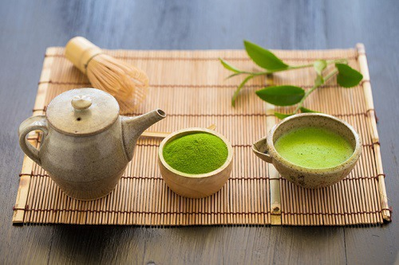

1. 녹차
녹차는 커피와 마찬가지로 카페인 성분이 포함되어 있어서 뇌 기능에 도움이 되며, 기억력 및 집중력을 향상시키는 효과가 있는데요. 항산화 물질이 뇌를 보호하고, L 테아닌 성분이 카페인의 자극 효과를 상쇄하여 긴장을 풀고 진정할 수 있도록 돕습니다.
녹차는 커피와 마찬가지로 카페인 성분이 포함되어 있어서 뇌 기능에 도움이 되며, 기억력 및 집중력을 향상시키는 효과가 있는데요. 항산화 물질이 뇌를 보호하고, L 테아닌 성분이 카페인의 자극 효과를 상쇄하여 긴장을 풀고 진정할 수 있도록 돕습니다.
블루베리는 안토시아닌 성분이 풍부하게 포함되어 있어서 항염증 및 항산화 효과가 있는데요. 산화 스트레스 및 염증에 대항하여 작용하며, 뇌의 노화 및 신경 퇴행성 질환을 예방합니다. 또한, 블루베리의 항산화 물질은 뇌 세포 향상에 기여하며, 단기 기억력 손실을 지연하고, 기억력 증진에 도움이 됩니다.
다크 초콜릿에는 플라보노이드를 포함하여 카페인 및 산화 방지제 등의 뇌 촉진 성분이 함유되어 있는데요. 기억력을 향상시키고, 노화와 관련된 정신적 퇴화를 늦추는데 도움이 됩니다. 또한, 기분 개선에도 도움이 되는데요. 오후 간식으로 섭취하면 좋습니다.
아몬드, 호두, 피스타치오 등의 견과류는 건강한 지방 및 항산화 물질, 비타민 E 등과 같은 다양한 영양소를 포함하고 있으며, 뇌 건강에 도움이 되는데요. 활성산소로부터 세포막을 보호하고, 건강한 심장을 유지하도록 합니다.
계란에는 비타민 B를 포함하여 엽산과 콜린 등 뇌 건강과 관련된 영양소를 함유하고 있는데요. 신체가 기억을 조절하도록 돕는 신경전달물질을 생성하고, 정신적 노화의 진행을 늦추도록 합니다. 또한, 두뇌 화학물질을 합성하고, 뇌의 당 수치를 조절 돕습니다.